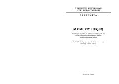

MHO'zbekiston Respublikasi ma'muriy huquq tizimi va davlat boshqaruvi asoslari bo'yicha darslik.
Ushbu darslik O'zbekiston Respublikasi huquq tizimida ma'muriy huquqning o'rni, uning predmeti, prinsiplari va davlat boshqaruvi faoliyatini tartibga solish mexanizmlarini yoritib beradi. Kitobda ma'muriy javobgarlik, huquqbuzarliklar va ijro etuvchi hokimiyat organlarining faoliyati nazariy hamda amaliy jihatdan tahlil qilingan.